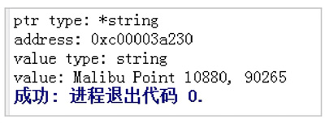

首页 > 编程笔记
Go语言指针使用教程
一个指针变量指向了一个值的内存地址。类似于变量和常量，在使用指针前需要声明指针。
Go语言指针声明格式如下：
以下是有效的指针声明：
所有指针的值的实际数据类型（无论是整数、浮点数还是其他数据类型）都是相同的，它表示内存地址的长十六进制数。
使用指针基本上分为3个步骤：
请看下面的例子：
a的地址:c000010198
ap的地址:c000010198
*ap的值:20
当一个指针被定义后没有分配到任何变量时，它的默认值为 nil。指针变量通常缩写为 ptr。
每个变量在运行时都拥有一个地址，这个地址代表变量在内存中的位置。Go 语言中使用
指针使用流程如下：
指针实际用法如下：
0xc00012a058 0xc000108220
在以上代码中：
注意：变量、指针和地址的关系是，每个变量都拥有地址，指针的值就是地址。
指针的特点有以下几点：
1) 在赋值语句中，*T 如果出现在 = 左边，表示指针声明；*T 如果出现在 = 右边，则表示取指针指向的值，例如：
2) 结构体指针访问结构体字段仍然使用
3) Go语言中不支持指针的运算。
Go语言支持垃圾回收机制，如果再支持指针运算，则会给垃圾回收的实现带来不便，又由于指针运算在 C/C++ 中很容易出现问题，因此Go语言直接禁止指针运算，例如：
4) 函数中允许返回局部变量的地址。
Go语言的编译器使用“栈逃逸”机制将这种局部变量的空间分配在堆上，例如：
在以上代码中：
取地址操作符
变量、指针地址、指针变量、取地址、取值的相互关系和特性如下：
使用指针也可以进行数值交换，代码如下：
5 2
在以上代码中：
总的来说，
当在 swap() 函数中交换操作的是指针值时，代码如下：
2 5
从以上结果中可以看出，交换不成功。
swap() 函数交换的是 a 和 b 的地址，在交换完毕后，a 和 b 的变量值确实被交换了，但和 a、b 关联的两个变量并没有实际关联，因此最终的结果是交换不成功。
Go语言指针声明格式如下：
var var_name *var-type
其中，var-type 为指针类型，var_name 为指针变量名，* 号用于指定变量是作为一个指针。以下是有效的指针声明：
var ip *int /*指向整型*/ var fp *float32 /*指向浮点型*/指针在Go语言中可以被拆分为两部分内容：
- 类型指针：允许对这个指针类型的数据进行修改，传递数据可以直接使用指针，而无须复制数据，类型指针不能进行偏移和运算。
- 切片：由指向起始元素的原始指针、元素数量和容量组成。
所有指针的值的实际数据类型（无论是整数、浮点数还是其他数据类型）都是相同的，它表示内存地址的长十六进制数。
使用指针基本上分为3个步骤：
- 定义一个指针变量；
- 将一个变量的地址赋值给一个指针；
- 最后访问指针变量中可用地址的值。
请看下面的例子：
package main
import (
"fmt"
)
func main() {
a := 20
ap := &a
fmt.Printf("a的地址:%x\n", &a)
fmt.Printf("ap的地址:%x\n", ap)
fmt.Printf("*ap的值:%d\n", *ap)
}
运行结果如下：a的地址:c000010198
ap的地址:c000010198
*ap的值:20
Go语言指针地址和指针类型
一个指针变量可以指向任何一个值的内存地址，它所指向的值的内存地址在 32 位和 64 位机器上分别占用 4B 或 8B，占用字节的大小与所指向的值的大小无关。当一个指针被定义后没有分配到任何变量时，它的默认值为 nil。指针变量通常缩写为 ptr。
每个变量在运行时都拥有一个地址，这个地址代表变量在内存中的位置。Go 语言中使用
&操作符放在变量前面对变量进行取地址操作，格式如下：
ptr := &v //v 的类型为 T
其中，v 代表被取地址的变量，变量 v 的地址使用变量 ptr 进行接收，ptr 的类型为*T，称为 T 的指针类型，*代表指针。指针使用流程如下：
- 定义指针变量；
- 为指针变量赋值；
- 访问指针变量中指向地址的值。
指针实际用法如下：
package main
import (
"fmt"
)
func main() {
var cat int = 1
var str string = "banana"
fmt.Printf("%p %p", &cat, &str)
}
运行结果如下：0xc00012a058 0xc000108220
在以上代码中：
- 第 6 行，声明整型变量 cat。
- 第 7 行，声明字符串变量 str。
-
第 8 行，使用 fmt.Printf 的动词
%p打印 cat 和 str 变量取地址后的指针值，指针值带有0x的十六进制前缀。
注意：变量、指针和地址的关系是，每个变量都拥有地址，指针的值就是地址。
Go语言指针的创建
可以使用 new() 函数来创建指针，格式如下：new(类型)
使用 new() 函数来创建指针可以写成如下：str := new(string) *str = "你好,世界！" fmt.Println(*str)new() 函数可以创建一个对应类型的指针，创建过程会分配内存，被创建的指针指向默认值。
指针的特点有以下几点：
1) 在赋值语句中，*T 如果出现在 = 左边，表示指针声明；*T 如果出现在 = 右边，则表示取指针指向的值，例如：
var m = 20 p := &m //*p和m的值都为20
2) 结构体指针访问结构体字段仍然使用
.操作符，Go语言中没有->操作符，例如：
type User struct {
name string
age int
}
andes := User {
name: "andes " ,
age: 20,
}
p := &andes
fmt.Println(p.name) //p.name通过"."操作符访问成员变量
3) Go语言中不支持指针的运算。
Go语言支持垃圾回收机制，如果再支持指针运算，则会给垃圾回收的实现带来不便，又由于指针运算在 C/C++ 中很容易出现问题，因此Go语言直接禁止指针运算，例如：
a := 1234 p := &a p++ //这种写法是不允许的,系统会报"non-numeric type *int"错误
4) 函数中允许返回局部变量的地址。
Go语言的编译器使用“栈逃逸”机制将这种局部变量的空间分配在堆上，例如：
func sum (a ,b int) *int {
sum := a+b
return & sum //这种情况是允许的,sum会分配在heap上
}
从指针获取指向指针的值
当使用&操作符对普通变量进行取地址操作并得到变量的指针后，可以对指针使用*操作符，也就是指针取值，代码如下：
package main
import (
"fmt"
)
func main() {
//准备一个字符串类型
var house = "Malibu Point 10880, 90265"
//对字符串取地址, ptr类型为*string
ptr := &house
//打印ptr的类型
fmt.Printf("ptr type: %T\n", ptr)
//打印ptr的指针地址
fmt.Printf("address: %p\n", ptr)
//对指针进行取值操作
value := *ptr
//取值后的类型
fmt.Printf("value type: %T\n", value)
//指针取值后就是指向变量的值
fmt.Printf("value: %s\n", value)
}
运行结果如图1所示。

图1：获取指针指向的值
图1：获取指针指向的值
在以上代码中：
- 第 7 行，准备一个字符串并赋值。
- 第 9 行，对字符串取地址，将指针保存到变量 ptr 中。
- 第 11 行，打印变量 ptr 的类型，其类型为 *string。
- 第 13 行，打印 ptr 的指针地址，地址每次运行都会发生变化。
- 第 15 行，对 ptr 指针变量进行取值操作，变量 value 的类型为 string。
- 第 17 行，打印取值后 value 的类型。
- 第 19 行，打印 value 的值。
取地址操作符
&和取值操作符*是一对互补操作符，&取出地址，*根据地址取出地址指向的值。变量、指针地址、指针变量、取地址、取值的相互关系和特性如下：
-
对变量进行取地址操作使用
&操作符，可以获得这个变量的指针变量。 - 指针变量的值是指针地址。
-
对指针变量进行取值操作使用
*操作符，可以获得指针变量指向的原变量的值。
Go语言使用指针修改值
通过指针不仅可以取值，还可以修改值。使用指针也可以进行数值交换，代码如下：
package main
import "fmt"
//交换函数
func swap(a, b *int) {
//取a指针的值, 赋给临时变量t
t := *a
//取b指针的值, 赋给a指针指向的变量
*a = *b
//将a指针的值赋给b指针指向的变量
*b = t
}
func main() {
//准备两个变量, 赋值2和5
x, y := 2, 5
//交换变量值
swap(&x, &y)
//输出变量值
fmt.Println(x, y)
}
运行结果如下：5 2
在以上代码中：
- 第4行，定义一个交换函数，参数为 a、b，类型都为 *int 指针类型。
- 第6行，取指针 a 的值，并把值赋给变量 t，t 此时是 int 类型。
- 第8行，取 b 的指针值，赋给指针 a 指向的变量。此时 *a 不是取 a 指针的值，而是“a指向的变量”。
- 第10行，将 t 的值赋给指针 b 指向的变量。
- 第14行，准备 x、y 两个变量，分别赋值为 2 和 5，类型为 int。
- 第16行，取 x 和 y 的地址作为参数传给 swap() 函数进行调用。
- 第18行，交换完毕，输出 x 和 y 的值。
*操作符作为右值时，意思是取指针的值；作为左值时，也就是放在赋值操作符的左边时，表示 a 指向的变量。总的来说，
*操作符的根本意义就是操作指针指向的变量。当操作在右值时，就是取指向变量的值，当操作在左值时，就是将值设置给指向的变量。当在 swap() 函数中交换操作的是指针值时，代码如下：
package main
import "fmt"
func swap(a, b *int) {
b, a = a, b
}
func main() {
x, y := 2, 5
swap(&x, &y)
fmt.Println(x, y)
}
运行结果如下：2 5
从以上结果中可以看出，交换不成功。
swap() 函数交换的是 a 和 b 的地址，在交换完毕后，a 和 b 的变量值确实被交换了，但和 a、b 关联的两个变量并没有实际关联，因此最终的结果是交换不成功。
关注公众号「站长严长生」，在手机上阅读所有教程，随时随地都能学习。内含一款搜索神器，免费下载全网书籍和视频。

微信扫码关注公众号